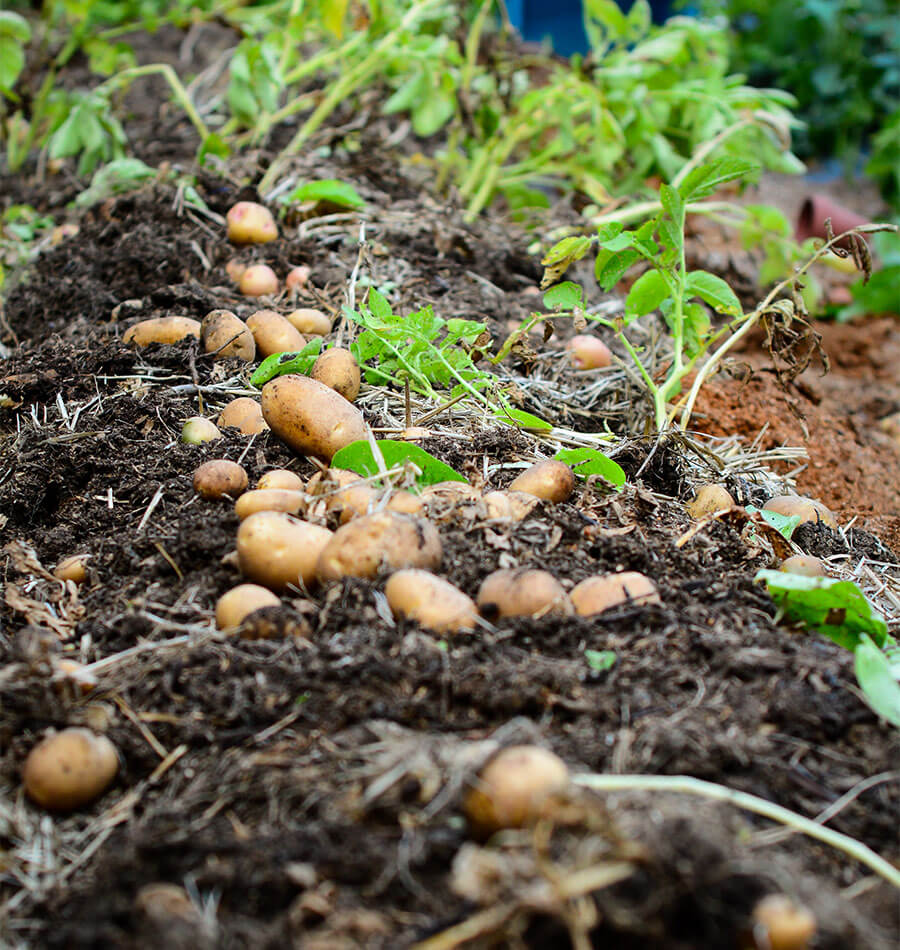
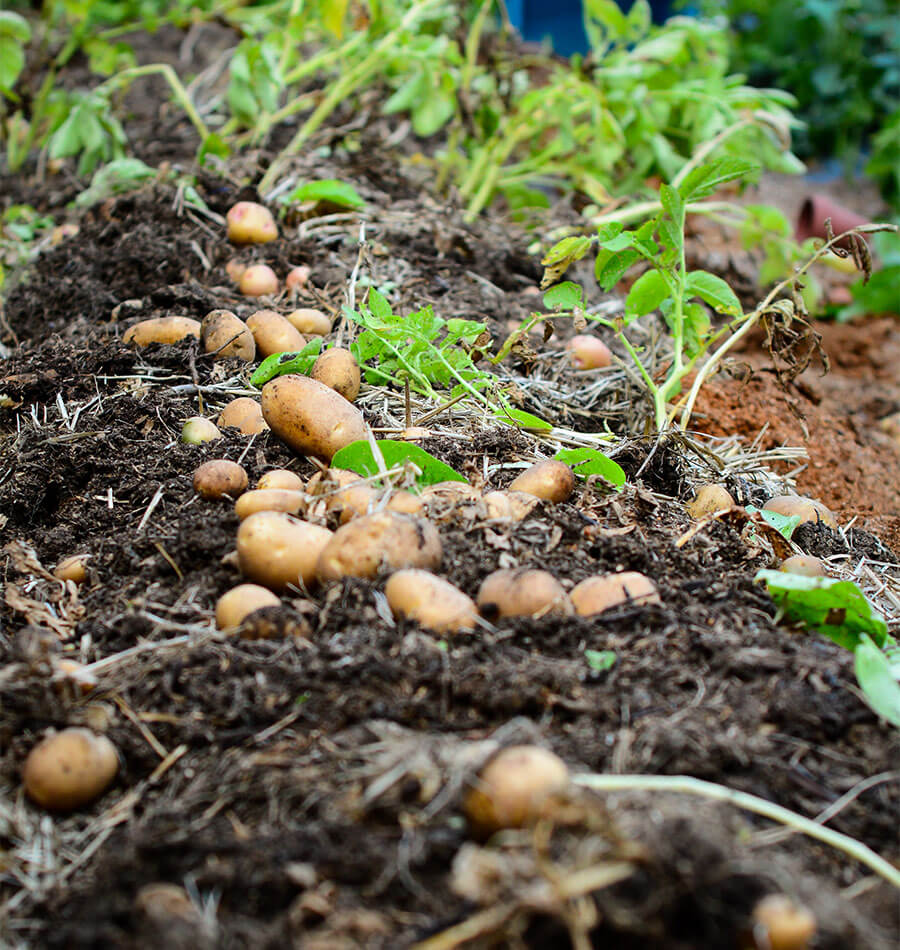

Rice
Rice cultivation involves sowing seeds in prepared beds, transplanting seedlings to a paddy, and submerging the paddy in water for the growing season. The paddy is a field that's enclosed by levees and flooded with 2 to 4 inches of water. The seeds are sown in prepared beds, and when the seedlings are 25 to 50 days old, they are transplanted to a field, or paddy, that has been enclosed by levees and submerged under 5 to 10 cm (2 to 4 inches) of water, remaining submerged during the growing season.
In Bangladesh, rice is cultivated in three seasons: aman, aus, and boro. Boro is the main paddy production crop, and it relies heavily on irrigation and fertilizers.
The global rice market is highly dependent on the countries that produce the most rice, such as China, India, and Bangladesh. Rice cultivation is vital for food security and agricultural stability.


Maize
Maize is a fast-growing crop that can be grown in Bangladesh all year round. It is the third most important grain crop in the country. Here are some facts about maize cultivation in Bangladesh: Seasons Maize is grown in two seasons: Rabi (winter) and Kharif I (summer). Winter maize is the most common, accounting for 84% of the country's total maize area. Planting Maize is planted between October and February, depending on the land and cropping practices. Temperature Maize grows best in temperatures between 10°C and 30°C, with ideal conditions being 12°C minimum and 29°C maximum. Yield The national average yield of maize is 10.2 tons per hectare. Production areas The major maize-producing areas are Bandarban, Rangamati, Dinajpur, and Rajshahi. Dhaka, Chuadanga, Bogra, and Lalmonirhat also produce a significant amount of maize. Research The Bangladesh Agricultural Research Institute (BARI) and Bangladesh Wheat and Maize Research Institute (BWMRI) have developed 27 varieties of maize. Market development The Agri-business for Trade Competitiveness Project (Katalyst) has helped farmers in Bangladesh by providing training, quality inputs, and market access.


Wheat
Wheat is an important crop in Bangladesh, the second most important cereal after rice. It's grown in a variety of climatic and soil conditions but thrives in clayey loam soils.Wheat is an important crop in Bangladesh, the second most important cereal after rice. It's grown in a variety of climatic and soil conditions, but it does best in clayey loam soils and requires dry weather and lots of sunlight. Here are some facts about wheat cultivation in Bangladesh: Climate Wheat grows well in Bangladesh's sub-tropical and tropic regions, where the average temperature during the growing season (November to April) is between 18.8°C and 25.3°C. Rainfall Well-distributed rainfall between 40 and 110 cm is ideal, and the crop takes about 100–120 days from sowing to harvest, depending on the variety and weather. Well-distributed rainfall between 40 and 110 cm is ideal for growing wheat. Sowing to harvest Depending on the variety and weather, it takes 100–120 days for wheat to go from sowing to harvest. Cropping systems Wheat is often grown in intensive rice-based cropping systems, with about 80% of the wheat area planted in a three-crop rotation. Diseases and pests Wheat is susceptible to a number of diseases, including rusts, smuts, bacteria, viruses, and nematodes. It's also attacked by insect pests like leafhoppers, termites, and wheat aphids. Production In 2014, Bangladesh farmers cultivated wheat on 453,421 hectares of land and produced 1,375,270 metric tons of wheat. Wheat consumption Wheat contributes 2.6% of the average per capita per day total consumption of food in Bangladesh.


Potato
Potatoes are a major crop and a staple food around the world. In Bangladesh, they are grown mostly during the rabi season. The crop requires well-drained soil and moderate rainfall.Soil Requirements: Potatoes thrive in well-drained, loose, and sandy loam soil rich in organic matter. The soil should be slightly acidic (pH 5.5 to 6.5). Climate: Potatoes prefer cool climates with temperatures ranging from 15°C to 20°C. They are typically grown during the winter or rabi season. Planting Time: Plant potatoes in the soil when the temperature is between 7-13°C. They are usually sown in late winter or early spring. Spacing: Space the potato tubers 30 cm apart in rows, and keep 75 cm between rows to allow for proper growth and tuber development. Watering: Regular watering is essential for potato growth. Keep the soil moist but not waterlogged, as this can lead to tuber rot. Harvesting: Potatoes are ready for harvest 90-120 days after planting, depending on the variety. The leaves of the plant start turning yellow when the tubers are ready.
 



Cauliflower
Soil Requirements: Cauliflower grows best in fertile, well-drained soils with a pH range of 6.0 to 7.5. Climate: Cauliflower prefers cool weather and can be grown in temperate climates. It requires temperatures between 15°C and 25°C for optimal growth. Planting Time: Cauliflower is typically planted in the cooler months of the year, and in tropical regions, it’s grown during the winter season. Spacing: Plant cauliflower seedlings 45 cm apart within rows, and maintain 60 cm between rows to allow for proper air circulation and space for growth. Watering: Keep the soil consistently moist, especially during dry periods, but avoid waterlogging. Harvesting: Cauliflower heads are typically ready for harvest 60-90 days after transplanting when they are firm, compact, and tightly closed.


Tomato
Soil Requirements: Tomatoes prefer well-drained, fertile soil with a pH level between 6.0 and 6.8. Adding organic compost is beneficial. Climate: Tomatoes thrive in warm weather with temperatures between 20°C and 25°C. Planting Time: Tomatoes are typically planted in spring or early summer after the risk of frost has passed. Spacing: Space tomato plants 45 cm apart in rows, and maintain a distance of 75-90 cm between rows. Watering: Regular watering is crucial, but avoid getting the foliage wet to prevent fungal diseases. A drip irrigation system is ideal. Harvesting: Tomatoes are usually ready to harvest 60-90 days after planting, depending on the variety. They should be firm, fully colored, and slightly soft when squeezed.

Carrot
Soil Requirements: Carrots require deep, loose, well-drained soil, ideally sandy loam with a pH range of 6.0 to 6.8. The soil should be free of stones to allow smooth root development. Climate: Carrots thrive in cooler weather, between 15°C and 20°C. Planting Time: Carrots can be grown in both the rabi and kharif seasons, typically planted in early winter or early spring. Spacing: Space carrot seeds 2-3 cm apart in rows, with 30-45 cm between rows. Watering: Keep the soil evenly moist throughout the growing period. Avoid over-watering, which can cause root rot. Harvesting: Carrots are ready for harvest in 80-120 days, depending on the variety. The foliage will turn yellow, and the roots will reach the desired size.